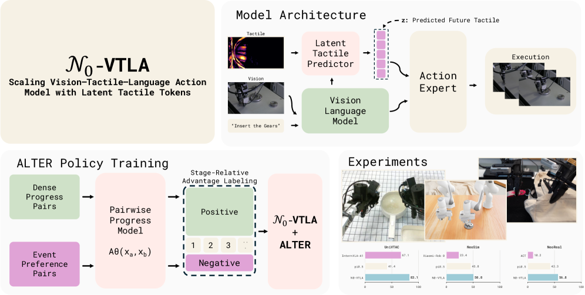
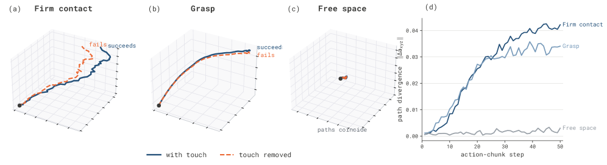

제출: 2026년 7월 26일 · 백본 PaliGemma + flow-matching action expert · 데이터 NeoData(비전-촉각)
한 줄 요약 (TL;DR)
로봇에 촉각 센서를 달아도 잘 안 되는 이유가 있다. 촉각 값은 이미 뭔가에 닿은 뒤에야 생기므로, 그걸 보고 행동을 정하면 항상 한 박자 늦는다. 이 논문은 발상을 뒤집어, 현재 감촉을 읽는 대신 "이번 동작을 하면 촉각이 어떻게 변할지"를 미리 예측하게 만든다. 그 예측 결과를 작은 벡터 하나(잠재 촉각 토큰)로 압축해 행동 생성기에 넘긴다. 결과적으로 로봇은 콘센트에 플러그를 꽂을 때 눈으로 한 번 보고 찔러 넣는 방식에서, 닿는 느낌을 예상하며 조금씩 다시 시도하는 방식으로 바뀐다. 실제 로봇 9개 접촉 작업 평균 성공률 47.2%(같은 작업에서 π0.5는 29.4%)로 9개 전부 우위, 시뮬레이션 20개 작업 63.8%(최강 비교군 44.0%), 촉각 벤치마크 UniVTAC 8개 작업 83.1%(67.1%).
1배경 · 문제의식
요즘 로봇 정책은 VLA(Vision-Language-Action, 카메라 영상과 말로 된 지시를 받아 로봇 관절 움직임을 직접 뱉는 모델)가 주류다. 조작은 꽤 하지만 촉각을 끼워 넣는 방법이 마땅치 않았다. 지금까지의 시도는 두 갈래였다.
촉각을 카메라 영상처럼 취급해 언어·영상 입력 뒤에 그냥 이어 붙이기.
지금 이 순간의 촉각 값을 행동을 만드는 마지막 단계에 밀어 넣기.
둘 다 같은 벽에 부딪힌다. 촉각 신호는 대부분의 시간 동안 아무것도 없다가(허공에 있을 땐 0) 로봇이 이미 뭔가를 건드린 뒤에야 갑자기 생긴다. 그래서 촉각을 보고 행동을 정하는 구조는 언제나 사후 대응이 된다.
이 논문의 발상 전환: 촉각을 읽는 대신 예측한다. "이번에 이렇게 움직이면 손끝 감촉이 어떻게 변할까?"를 미리 계산해서 행동 생성에 반영한다. 사람이 어두운 방에서 벽을 더듬을 때, 손이 닿기 전에 이미 "곧 뭔가 닿겠다"고 예상하며 속도를 줄이는 것과 같다.
2핵심 Contribution
미래 감촉을 담은 작은 벡터 하나(잠재 촉각 토큰) — 촉각 센서 영상과 현재 상황을 합쳐, "앞으로 이어질 동작 구간에서 감촉이 어떻게 변할지"를 요약한 짧은 벡터 z를 만든다. 이 z는 언어 이해 쪽으로는 보내지 않고 행동을 만드는 부분에만 전달한다 — 언어 모델을 촉각으로 오염시키지 않으려는 설계.
촉각 경로를 3단계에 걸쳐 붙이는 학습법 — 한 번에 다 학습시키면 z가 아무 의미 없는 값으로 퇴화하기 쉽다. 그래서 ① z가 미래 감촉을 진짜로 맞히도록 먼저 훈련하고 → ② 행동 생성기가 z를 쓰는 법을 배우고 → ③ 마지막에 전체를 함께 다듬는다.
ALTER: 실패 경험까지 재활용하는 학습법 — 로봇을 실제로 굴리며 쌓인 기록(성공·실패 섞임)에서 "이 시점의 행동이 평균보다 좋았나 나빴나"를 좋음/나쁨 두 값으로 매겨 지시문에 붙여 학습한다. 로봇을 새로 굴릴 필요 없이 이미 있는 기록만으로 정책을 개선한다.
3Method
전체 구조: 무엇이 무엇에 연결되는가
기반 모델은 PaliGemma(영상과 글을 함께 이해하는 공개 모델)이고, 그 뒤에 행동을 만드는 부분이 붙는다. 이 부분은 flow matching 방식을 쓴다 — 무작위 노이즈에서 시작해 정답 궤적 쪽으로 흘러가는 방향을 학습해두고, 실행할 때 그 흐름을 몇 번 따라가 궤적을 완성하는 생성 기법이다(그림 생성 모델의 확산과 사촌 격이지만 더 빠르다).
한 번에 50스텝 분량의 움직임을 통째로 내놓으며, 출력은 32개 숫자로 된 공통 규격에 맞춘다. 로봇마다 관절 수와 구조가 다른데, 공통 규격 하나로 통일해두면 여러 종류의 로봇 데이터를 같이 학습시킬 수 있다.
촉각 경로: 감촉을 어떻게 벡터로 만드나
이 촉각 센서는 카메라 기반이다. 말랑한 표면이 눌린 모양을 안쪽 카메라로 찍어 압력 분포를 영상으로 얻는다. 그래서 이미지 처리 기술을 그대로 쓸 수 있다.
다만 원본 영상 대신 차이 영상을 쓴다 — 지금 영상에서 작업 시작 시점(아무것도 안 닿은 상태)의 영상을 뺀다. 센서마다 다른 초기 얼룩·개체차를 지우고 눌린 변화량만 남기려는 것.
이 차이 영상을 동결한 DINOv2(미리 학습해두고 더 이상 갱신하지 않는 이미지 인코더)로 벡터화한다.
작은 예측기가 이 촉각 벡터와 현재 영상·지시를 함께 보고 짧은 벡터 z를 뱉는다. 여기서 z의 학습 목표가 핵심이다 — 지금 감촉을 재현하는 게 아니라, 앞으로의 동작 구간에서 감촉이 어떻게 변할지를 맞히도록 학습된다.
3단계로 나눠 학습하는 이유
전부 한꺼번에 학습시키면 z가 그냥 무시당하거나 아무 의미 없는 값으로 굳어버리기 쉽다(논문의 free-latent 실험에서 실제로 그렇게 됨). 그래서 "z를 먼저 제대로 만들고 → 그 다음에 쓰는 법을 가르치는" 순서로 나눈다.
1단계: z를 맞게 만들기
z가 실제 미래 감촉과 짝이 맞도록 훈련. 여러 후보 중 진짜 짝을 골라내게 하는 대조 학습(InfoNCE — 정답 짝은 가깝게, 나머지는 멀게 밀어내는 방식)과 값 자체를 맞히는 복원 손실을 함께 씀. 결과: 정답 미래 감촉을 92.3% 정확도로 찾아냄(찍으면 3.2%)
2단계: z 쓰는 법 배우기
영상·언어 경로를 일부러 가려서, 행동 생성기가 z에 의존하도록 강제. 다른 부분은 고정
3단계: 함께 다듬기
동결 인코더만 빼고 전부 풀어 전체를 함께 미세조정
ALTER: 굴린 기록으로 정책 고치기
로봇을 실제로 돌리면 성공·실패가 뒤섞인 기록이 쌓인다. 보통은 성공만 골라 다시 학습하지만, ALTER는 각 순간이 평균보다 나았는지 나빴는지를 매겨 실패 기록도 쓴다. 절차는:
진행도 채점기 학습 — 두 장면을 놓고 "어느 쪽이 더 진척됐나"를 맞히도록 훈련. 학습 재료는 정상 시연, 촉각으로 잡아낸 놓침(drop) 순간, 사람이 개입해 고친 기록.
단계별 보정 — 오래 걸리는 단계가 점수를 독식하지 않도록, 각 단계의 평균 소요시간으로 가중치를 맞춘다.
좋음/나쁨 두 값으로 라벨링 — 각 단계 안에서 상위 30%만 "좋음". 이 라벨을 지시문 뒤에 덧붙여 학습시킨다. 실행할 때는 "좋음"을 달라고 요청하면 된다.
4실험 결과
실로봇 & 시뮬레이션 벤치마크
벤치마크
N₀-VTLA
최강 베이스라인
지표
NeoReal (실로봇 9태스크)
47.2%
29.4% (π0.5)
성공률 · 9/9 우위
NeoReal
56.8
42.3
진행도 점수(100점)
UniVTAC (8태스크)
83.1%
67.1% (InternVLA-A1)
성공률
NeoSim (20태스크)
63.8%
44.0%
평균 성공률
NeoReal 9개 접촉 리치 태스크(소켓 꽂기, 병 세우기, 상자 접기 등)에서 전 태스크 최고. 데이터는 자체 개발 비전 기반 촉각 센서로 수집한 다중 플랫폼 코퍼스 NeoData.
"z가 정말 촉각을 담고 있나?" 검증
잠재 벡터는 눈에 안 보이므로, 저자들은 두 가지 방법으로 z가 헛돌지 않음을 확인했다.
진짜 미래 감촉을 찾아내는가: z를 주고 여러 후보 중 실제로 이어진 감촉을 고르게 하니 92.3% 정확도(무작위로 찍으면 3.2%). 반면 현재 감촉만 담은 벡터로 같은 시험을 보면 57%에 그친다. 이 35%p 차이가 곧 "예측해서 얻은 정보"의 크기다.
촉각이 바뀔 때 z도 바뀌는가: 촉각 입력만 딴 것으로 바꿔치기하면 z가 크게 움직이고(코사인 거리 약 0.9), 영상이나 지시문을 바꾸면 조금만 움직인다(약 0.2). 촉각에 4.3배 더 민감하다 — z가 이름값을 한다는 뜻.
5Ablation · 행동 분석
촉각은 필요할 때만 개입한다: 같은 상황에서 촉각을 끄고 켜 보며 궤적을 비교했더니(그림 10), 허공을 움직일 땐 두 궤적이 거의 겹치고 단단히 맞닿는 순간에만 확 갈라졌다. 촉각이 아무 데나 끼어들어 궤적을 흔드는 게 아니라, 결과를 가르는 지점에서만 작동한다는 뜻.
행동 방식 자체가 바뀐다: 촉각이 있으면 삽입 작업이 "한 번 조준해서 밀어 넣기"에서 "닿는 느낌을 보며 다시 맞춰 넣기"로 바뀐다. 손가락 벌림 정도를 미세 조절해 쥐는 힘을 조절하는 행동도 나타났다.
기록 재활용(ALTER)과 함께 써도 이득이 남는다: 두 방법이 같은 문제를 중복해서 푸는 게 아니라 서로 보완한다.
순서를 건너뛰면 망가진다: 1단계(z를 미래 감촉에 맞추기)를 빼고 한꺼번에 학습시킨 변형에서는 z가 촉각과 무관한 값으로 퇴화했다. 3단계로 나눈 것이 장식이 아님을 보여주는 결과.
6핵심 Figure / Table

Figure 1 — 시스템 개요. (상) 아키텍처: 촉각·비전·지시가 각각 인코딩돼 잠재 촉각 예측기 z(미래 촉각 예측)와 VLM을 거쳐 액션 전문가를 조건화. (하좌) ALTER 정책 학습: 진행도 쌍 → 단계 상대 어드밴티지(이진) 라벨. (하우) UniVTAC/NeoSim/NeoReal에서 π0.5·베이스라인 대비 우위. (출처: arXiv:2607.23782)

Figure 10 — 촉각 유무 반사실(counterfactual). (a) 단단한 접촉(Firm contact): 촉각 제거 시 실패, 유지 시 성공 — 궤적이 접촉 지점에서 크게 발산. (b) 파지(Grasp)·(c) 자유 공간(Free space): 촉각 유무 궤적이 거의 일치. (d) 액션-청크 스텝별 경로 발산 — 접촉이 결과를 결정하는 순간에만 촉각이 개입. (출처: arXiv:2607.23782)